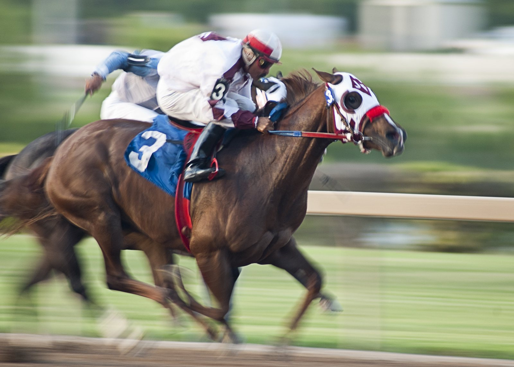

Malibu Smart paga 14-1 y se lleva el Dowager Stakes de Keeneland
La yegua de Mike Maker, reclamada en diciembre por 30.000 dólares, se impuso por un cuerpo y tres cuartos en el Rood & Riddle Dowager Stakes (Grado III), sobre milla y media de hierba en Keeneland.

Ben Curtis la sacó rápida del partidor y la dejó correr hasta la primera curva. Delante se pusieron Pretty Tapit y Modarosa. Malibu Smart se acomodó tercera, pegada a los palos, mientras la favorita Speed Shopper viajaba quinta o sexta a cubierto y Fionn, segunda opción en las apuestas a 3-1, rodaba entre las últimas.
La carrera se rompió en la última curva. Pretty Tapit se descolgó, Modarosa acusó el esfuerzo y Somethinabouther llegó a tomar la cabeza por el centro de la pista. Malibu Smart rodeó a la líder que se apagaba, encontró un segundo aire por dentro y se marchó del pelotón. Fionn remató tarde para ser segunda, y Speed Shopper, a un cuerpo y cuarto, fue tercera. El crono se paró en 2:33.27, con la pista en buen estado.
«En cuanto los líderes se pusieron delante, se relajó, empezó a respirar y cogió el ritmo. A partir de ahí iba muy cómodo», explicó Curtis, que reconoció que después del poste no era capaz de pararla.
Su trayectoria hasta aquí no ha sido la de una yegua de Grado. A sus seis años, la hija de English Channel y Mooghareadh, por Malibu Moon, ha cambiado de manos cuatro veces en carreras de reclamar, una de ellas por apenas 16.000 dólares. Maker la sacó en diciembre de la cuadra de Chris Hartman en Fair Grounds. Primero volvió a correrla en una de reclamar, sin que nadie se la llevara. Después la subió a condicionales y le fue alargando la distancia.
Este verano ganó en Saratoga sobre doce furlongs, su primera victoria desde que se estrenó como ganadora a finales de 2023. El 29 de agosto repitió en Kentucky Downs, por cuatro cuerpos y medio.
El Dowager es su primer triunfo en una prueba de categoría y deja 200.725 dólares a sus propietarios, Michael M. Hui y Phil Forte. «Por fin pudimos correrla a milla y media. Esa es la clave, y creo que quiere correr todavía más lejos», resumió Maker.
Por Martín Larrañeta